Seja bem vindo!
Uma breve história do nosso ministério, uma igreja que nasceu no coração de Deus.
Tudo começou com um sonho, Deus revelou ao Pastor Rodrigo uma visão: uma igreja com uma placa onde se lia “Gratos”. A partir dessa experiência divina, nasceu não apenas um nome, mas um propósito. Assim surgiu o Ministério Gratos — uma igreja fundamentada na gratidão, na obediência e no desejo de viver com propósito.
O início foi simples, mas cheio de significado. Alguns homens reunidos em torno de uma mesa, uma vez por semana, como um ministério de louvor. Ali, aprenderam e praticaram princípios poderosos como semeadura, maturidade e excelência — valores que continuam sendo a base da nossa caminhada até hoje.
O Gratos é mais do que uma igreja, é uma família que cultiva a presença de Deus, cresce em comunhão e se move em direção ao propósito eterno.
Carregando versículo...
“Ide por todo o mundo e pregai o evangelho a toda criatura.”
- Marcos 16:15
O evangelismo é o coração da missão da igreja. É por meio dele que levamos as boas novas de Jesus Cristo ao mundo, proclamando o amor, a graça e a salvação disponíveis a todos que creem. Como igreja, temos o compromisso de alcançar vidas, sair das quatro paredes e tocar corações através da Palavra de Deus, ações sociais e orações. Cada semente plantada, cada palavra compartilhada, é um ato de fé que pode transformar destinos eternos. O evangelismo não é uma opção — é um chamado.
 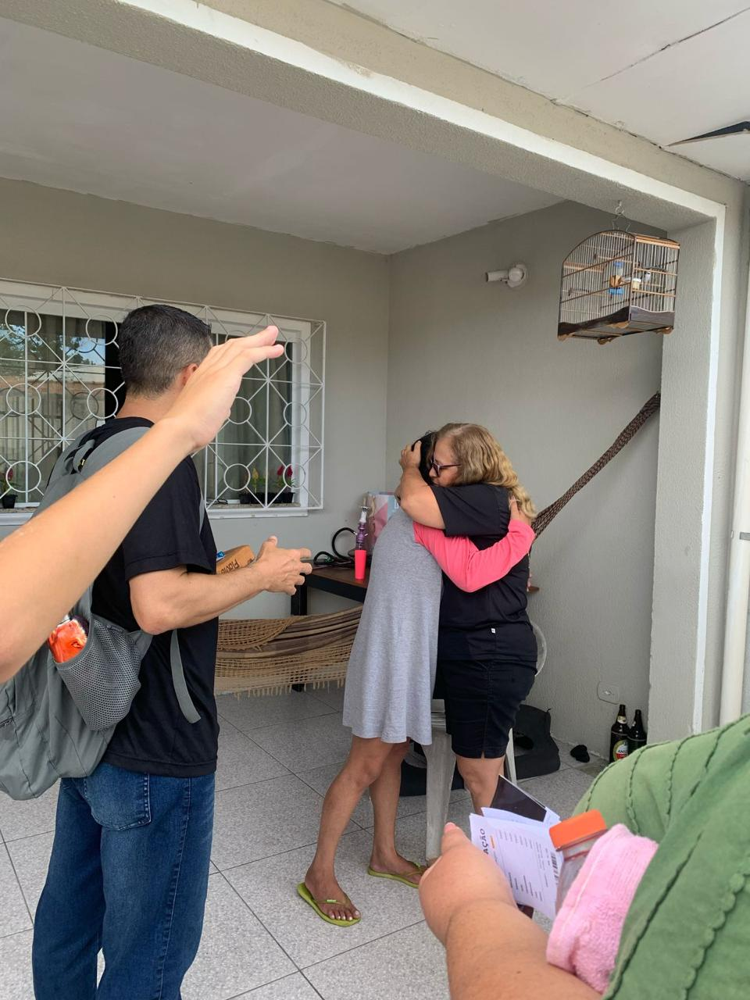
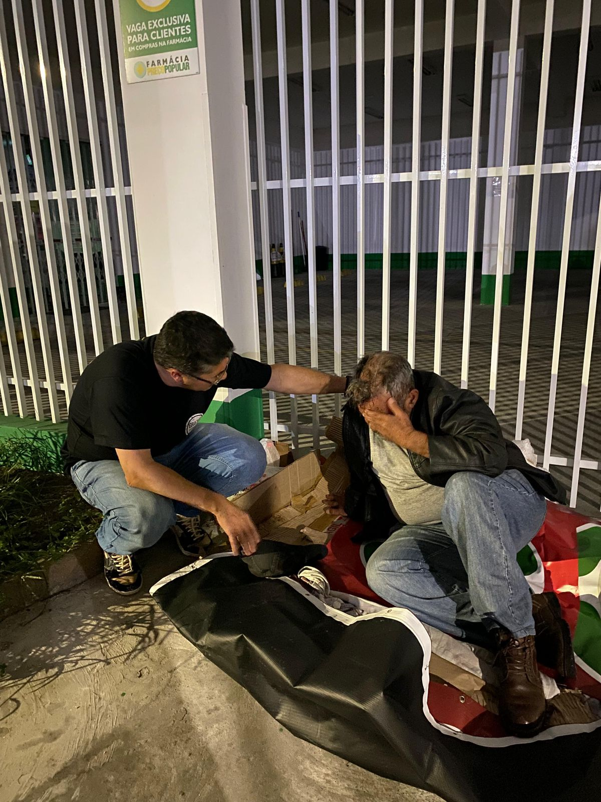
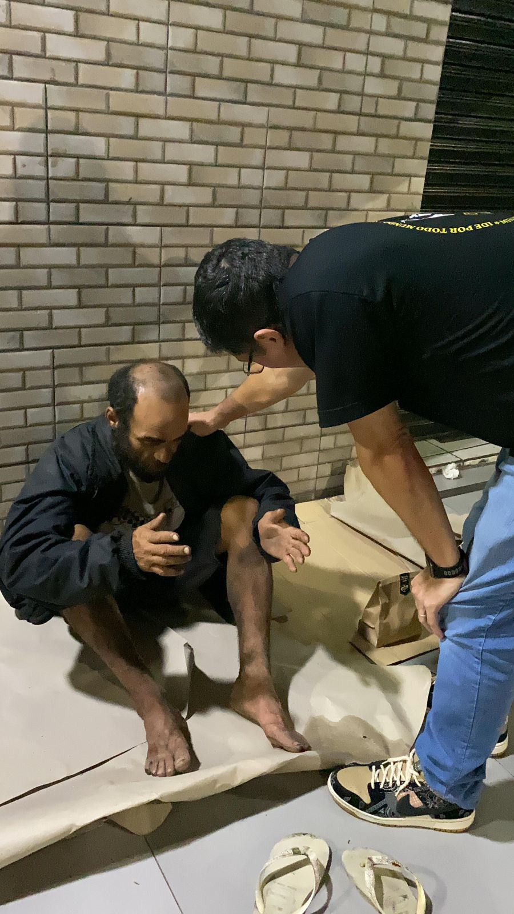
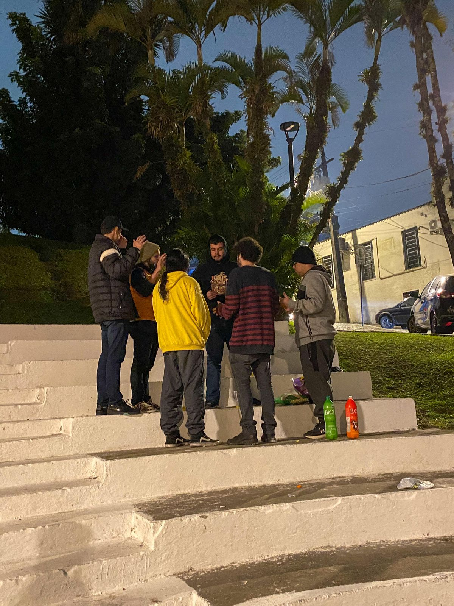
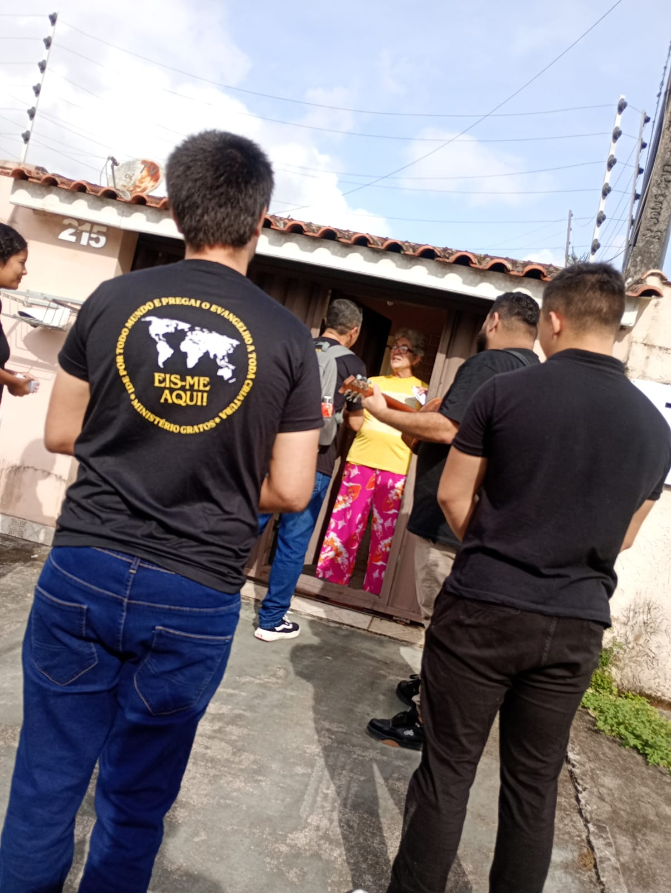
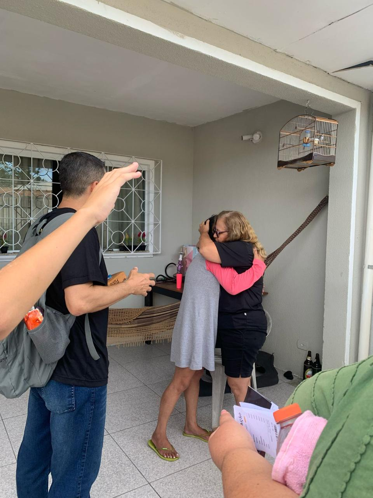
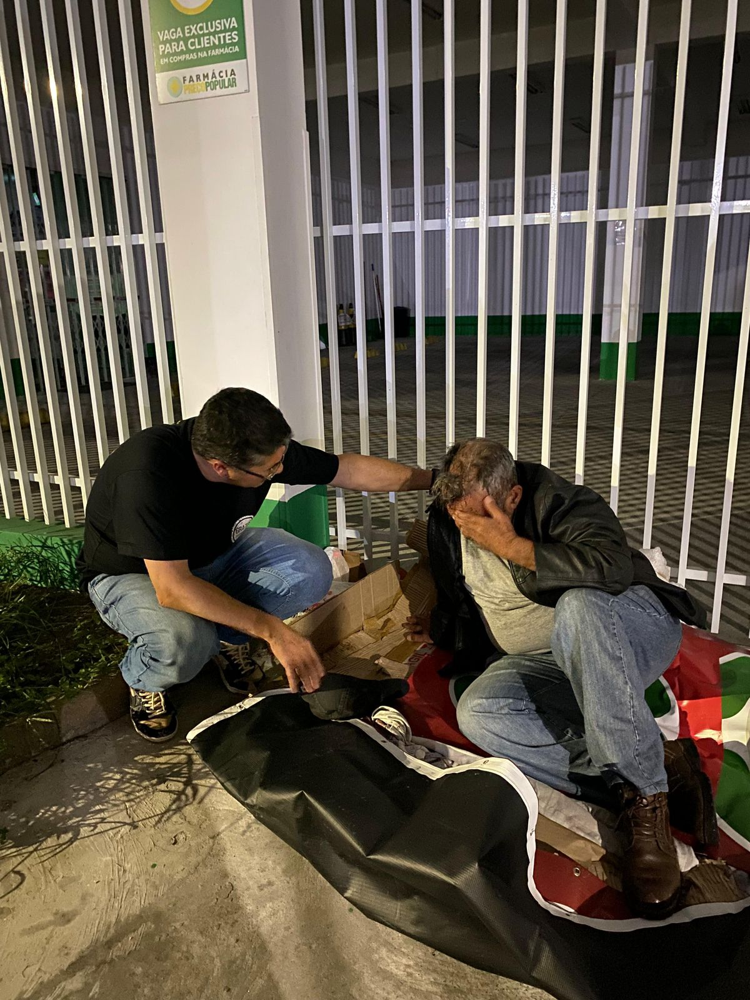
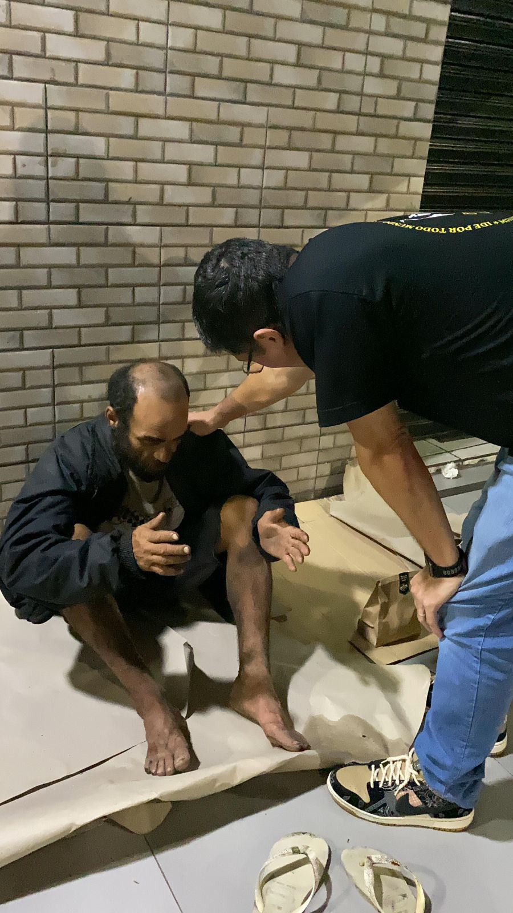
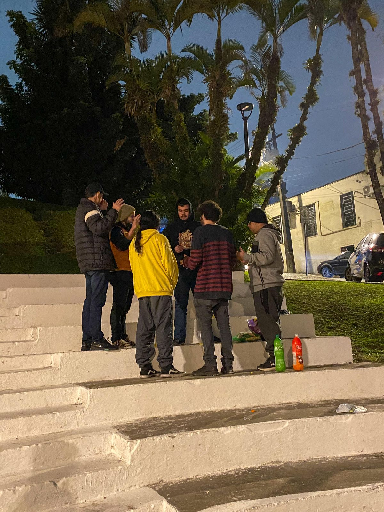
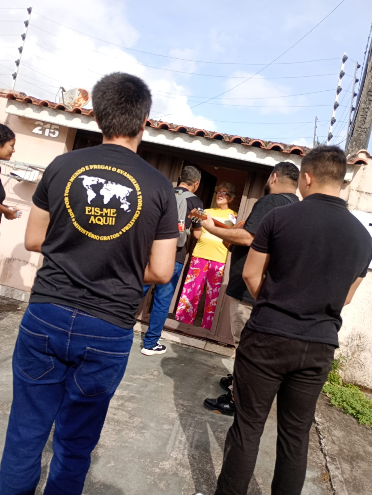
 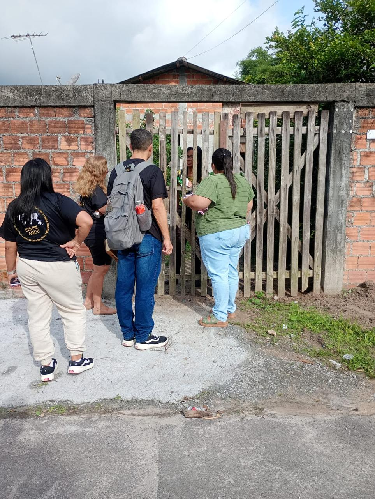
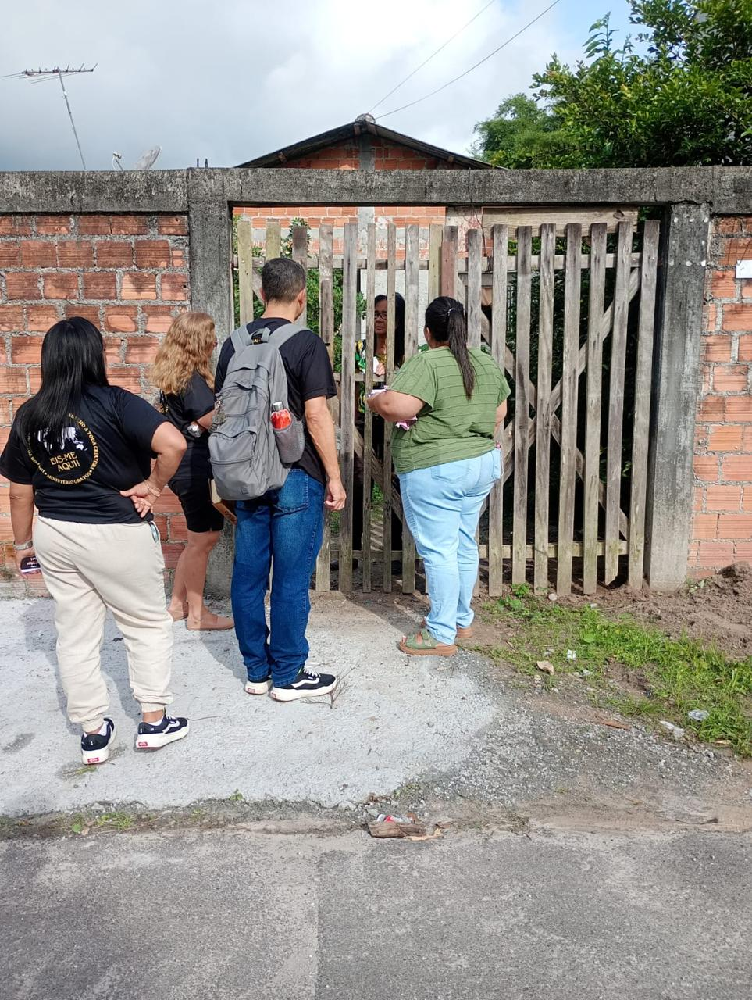
 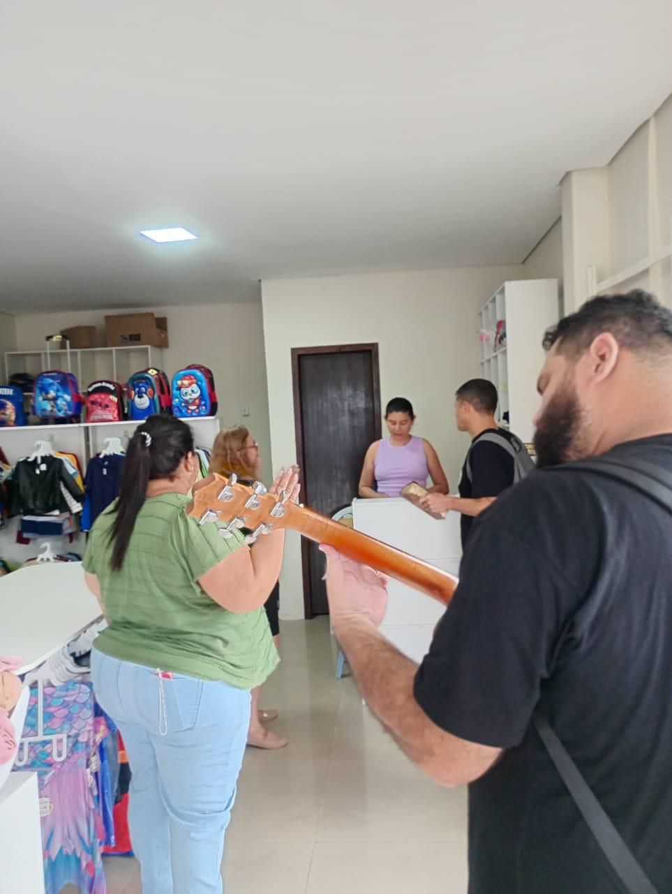
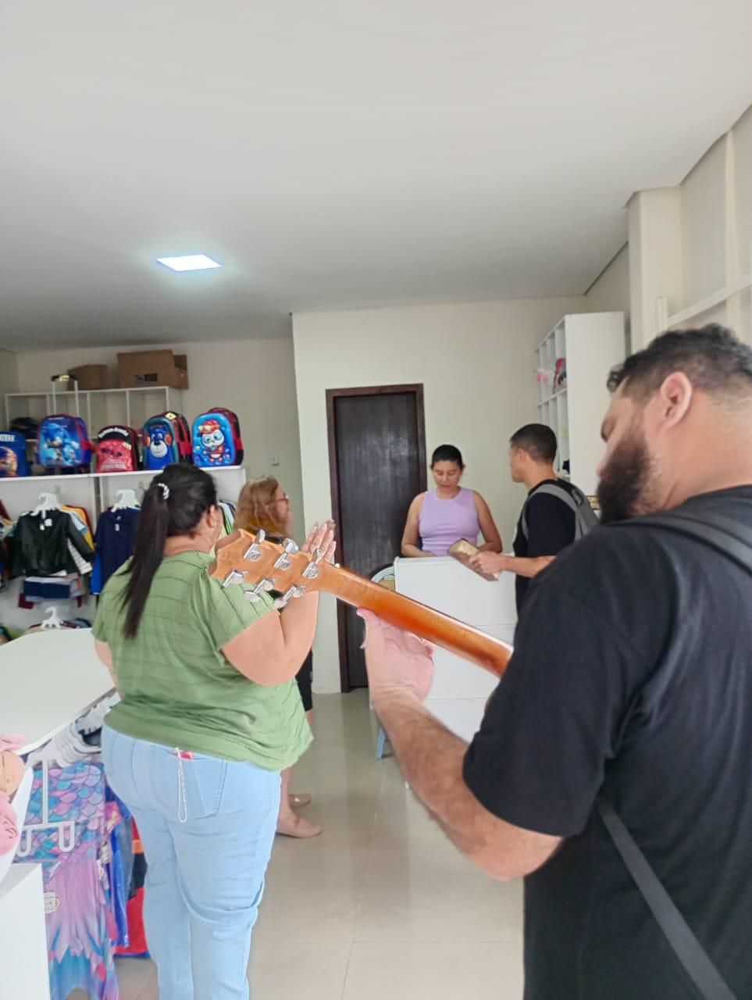